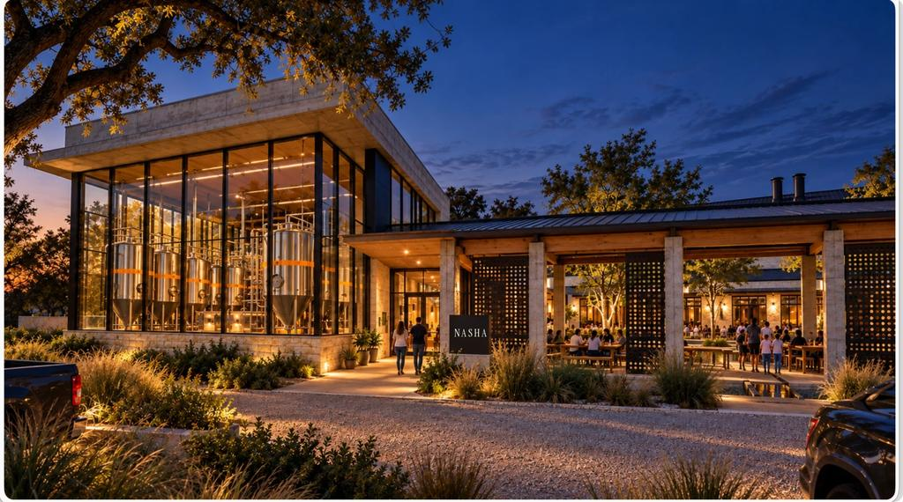
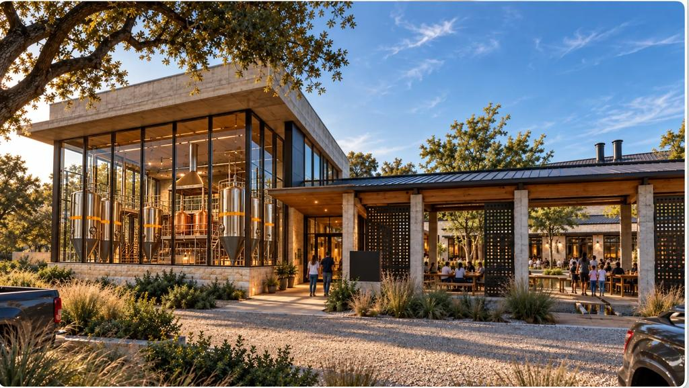
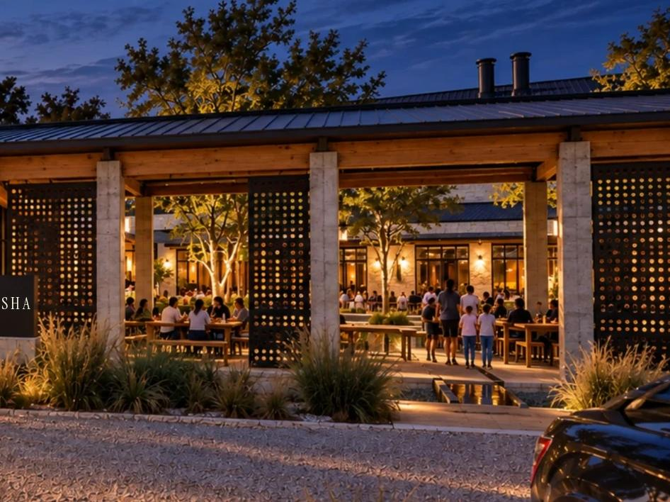

Chicken 65 Totopos
Our fusion take on South Indian Chicken 65, crisp spiced chicken designed to be eaten with fresh masa totopos.
Proposed presentation · not cooked or testedDesigning

Austin, Texas · In development
An Indo-Mex brewery and kitchen planned for Austin. Nothing is built, cooked or brewed yet. The idea: fire in the kitchen, fermentation in the glass hall, one long table between them.
NASHA is in development. There is no brewery, no restaurant, no truck and no menu for sale yet. Images are concept visualizations and illustrations, not photographs of NASHA. Equipment shown in images is illustrative: brewery size, tank count and layout are not decided.
In sixty seconds
Two cuisines that already build flavour from chile, acid and fire, joined into five core dishes that should feel like one cuisine.
Every dish has a beer and a non-alcoholic drink chosen for it, with equal standing. See the pairings.
The founder's chosen first market: a hypothesis to test, not a proven one. Why Austin.
House beer is the last thing to be built. A partner brewery can test the idea first. The staged path.
Dishes are developed by cooking, measuring, tasting and learning from failures. Visit the Lab.
A design system, a prepared first kitchen test and this private site. Nothing has been cooked, brewed or sold, and no restaurant, brewery or opening date exists. The name is a working name: a same-name Austin restaurant has been reported and legal clearance is pending.
02 Food × Beer
India and Mexico both build flavour from chile, lime, toasted spice, flatbread and fermentation. NASHA starts from what they share and lets each stay itself.
The food and the beer are specified together. That is a design goal we intend to test, not a result we have.
03 Fire × Fermentation
A clay tandoor and a flat comal: char, smoke and quick heat. This is how the kitchen is designed to cook.
Steel tanks behind glass, so the slow work is visible. Tank size and count are not decided.
04 The food
Drawn here as proposed presentation. No dish has been cooked for guests, and these are not photographs. See the five core dishes.
Our fusion take on South Indian Chicken 65, crisp spiced chicken designed to be eaten with fresh masa totopos.
Proposed presentation · not cooked or testedDesigning
Charred yogurt-marinated paneer with green salsa and pineapple, intended to stay tender in a corn tortilla.
Proposed presentation · not cooked or testedDesigning
Butter-chicken sauce, roasted poblano and melting cheese in a griddled flour tortilla.
Proposed presentation · not cooked or testedDesigning
05 The beer
Nothing has been brewed. These glasses are concept drawings of briefs for a head brewer to critique. Meet the beers.
Designed to show banana and clove in balance. The beer every other NASHA beer has to earn its place beside.
Not brewed yetStyle-based concept visualization
A crisp, clean lager designed to be the cold partner for chile heat.
Not brewed yetStyle-based concept visualization
Toasted bread-crust malt, designed to meet char and braise.
Not brewed yetStyle-based concept visualization
06 The Crossing
Chile, lime, toasted seeds, flatbread, fermentation. We separate what history supports from what is only a good comparison.
07 The place
Stone and glass, a timber arcade, a covered court under an oak. A concept: no site is chosen and nothing is engineered. Walk through it.


08 The table
Designed for sharing: five dishes, five beers, one long table. See an evening at NASHA.
09 Building NASHA
Everything above is a concept. This is the real path, and we are on its first step.
We are specifying the food, beer, place and brand, and preparing real tests.
Cooking the first dishes, talking to future guests, and running small events.
A way to serve people regularly and learn from real orders.
A permanent place with visible brewing, a full kitchen and a shaded court.
The name NASHA is chosen by the founder. Legal clearance is pending.
Five core dishes are the first to be tested in a home kitchen. None cooked yet.
Briefs are ready for a head brewer. Nothing has been brewed.
Illustrated, not engineered. No site chosen.
An interview guide is ready. No interviews yet.
Next step, after testing and permits are understood.
Only if early tests show people want it.
The goal. Built on evidence, not before it.
Nothing is in Testing or Validated yet. We will say so when that changes. See The Lab. About the word nasha and our commitments: About NASHA.
10 Follow the journey
We have not set up a mailing list, domain or contact address, so we will not pretend to collect your email. This page will change when that is real.